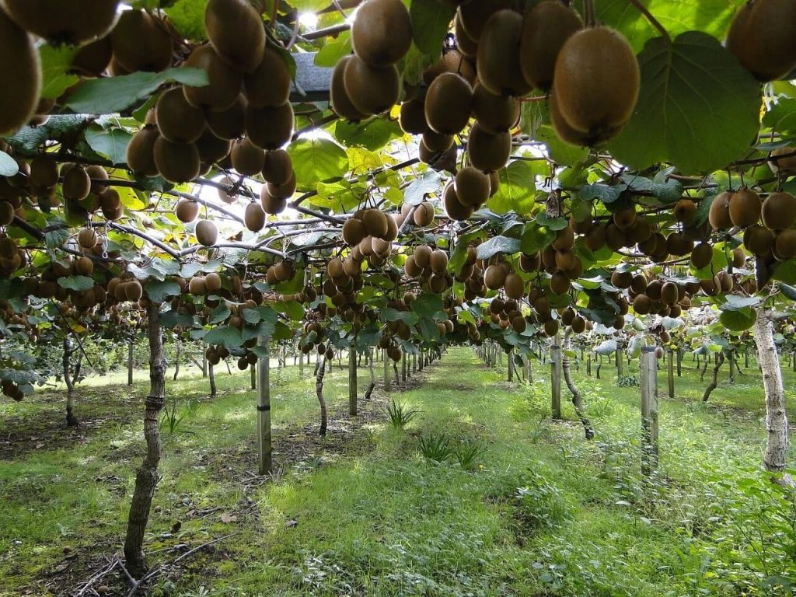

Agridera Fresh Market Kiwi Hybrids
×××××
Agridera is committed to becoming a global leader in the breeding, production, and marketing of kiwi fruit varieties.
Our strong focus on research and development allows us to provide innovative solutions for growers and consumers across
diverse global markets. We specialize in breeding improved, disease-resistant kiwi cultivars suited to different climates
and growing conditions.
Currently, our primary objective is to develop kiwi varieties with resistance to key diseases such as Bacterial Canker (Pseudomonas syringae), Armillaria Root Rot, and Phytophthora Root Rot. Additionally, we are actively working to enhance tolerance to abiotic stress factors, including frost, drought, and soil salinity.
From a horticultural perspective, our breeding programs emphasize early fruiting, large and uniform fruit sizes, extended shelf life, high sugar content, and a range of flesh colors from classic green to exotic red and gold. We aim to combine superior quality traits with high disease resistance in different kiwi categories, including green, yellow, red, and golden varieties.
Currently, our primary objective is to develop kiwi varieties with resistance to key diseases such as Bacterial Canker (Pseudomonas syringae), Armillaria Root Rot, and Phytophthora Root Rot. Additionally, we are actively working to enhance tolerance to abiotic stress factors, including frost, drought, and soil salinity.
From a horticultural perspective, our breeding programs emphasize early fruiting, large and uniform fruit sizes, extended shelf life, high sugar content, and a range of flesh colors from classic green to exotic red and gold. We aim to combine superior quality traits with high disease resistance in different kiwi categories, including green, yellow, red, and golden varieties.
Our breeding programs focus on three main categories: Green Kiwi Hybrids, Yellow and Red Kiwi Hybrids, and Premium Golden Kiwi.
Green Kiwi Hybrids
Developed for temperate and subtropical regions, these varieties feature vigorous vines, strong resistance to
Bacterial Canker and Root Rot, and high yields. The focus is on producing large, fuzzy-skinned green kiwis
with a balanced sweet-tart flavor, rich in vitamin C.
Yellow and Red Kiwi Hybrids
These varieties are tailored for markets demanding smooth-skinned kiwis with exotic flavors.
Selected for early maturity, high sugar content, and striking flesh colors, they offer excellent
disease resistance and adaptability to various climatic conditions. Ongoing breeding efforts aim
to improve post-harvest storage and transport resilience.
Premium Golden Kiwi
Aimed at high-end markets, these varieties provide a rich, honey-like sweetness, smooth golden skin,
and soft, juicy flesh. Strong resistance to bacterial diseases and excellent adaptability to different
growing environments make them an attractive option for commercial growers worldwide.
Agridera works closely with a global network of distributors to ensure the availability of high-quality kiwi hybrids across international markets.
{{p.title}}
{{p.short_text}}